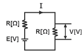
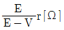
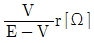
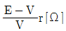
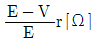

농기계운전기능사 (2012-07-22 기출문제)
1과목: 농기계운전
1. 수냉식 기관에서 라디에이터(radiator)는 어떤 장치의 구성품인가?
- 연료 분사장치
- 냉각수 냉각장치
- 연료 여과장치
- 기관의 부식방지 장치
(정답률: 89%)

2. 동력 살분무기에서 저속은 잘되나 고속이 잘 안되며, 공기 청정기로 연료가 나올 때의 고장은?
- 미스트발생부 고장
- 노즐 고장
- 임펠러 고장
- 리이드 밸브 고장
(정답률: 62%)
3. 다음 중 동력경운기의 로터리 탈부착과 작업 전 조치사항으로 알맞지 않은 것은?
- 로터리 날의 휨 상재를 세밀히 점검한다.
- 토양 상태에 따라 바퀴를 선택한다.
- 히치부를 부착시킨다.
- 모서리의 미륜을 조정한다.
(정답률: 50%)
4. 디젤엔진의 출력은 무엇으로 조정하는가?
- 혼합기의 유입량 을 조절하여
- 분사하는 연료량을 가감하여
- 가버너 스프링의 상력을 조정하여
- 흡배기 밸브의 개폐 속도를 조절하여
(정답률: 61%)
5. 주행하면서 농작물을 예취하고 탈곡을 함께 하는 기계는?
- 예취기
- 리커
- 콤바인
- 모위
(정답률: 94%)
6. 산파모 이앙기에서 식부침의 크랭킹 속도와 모 탑재대의 상대속도를 조절 및 조정하는 것은?
- 주간의 조정
- 조간의 조정
- 식부 본수의 가로 이송량 조정
- 식부 본수의 세로 이송량 조정
(정답률: 64%)
7. 조파용 파종기에서 구절기가 하는 일은?
- 배출장치에서 나온 종자를 지면까지 유도한다.
- 파종된 종자를 덮고 눌러주는 장치이다.
- 일정량의 종자를 배출하는 장치이다.
- 적당한 깊이의 파종 골을 만든다.
(정답률: 56%)
8. 2행정 사이클 엔진에 대한 설명으로 맞는 것은?
- 크랭크축이 1회전 시 1회의 동력 행정을 갖는다.
- 크랭크축이 2회전 시 1회의 동력 행정을 갖는다.
- 크랭크축이 3회전 시 1회의 동력 행정을 갖는다.
- 크랭크축이 4회전 시 1회의 동력 행정을 갖는다.
(정답률: 54%)
9. 로터리 경운법 중 차륜폭이 로터리 날보다 넓을 때에는 어떤 것이 좋은가?
- 한줄 건너떼기 경운법
- 연접 왕복 경운법
- 절충 경운법
- 회경법
(정답률: 54%)
10. 관리기로 두둑을 만드는 작업 방법이 잘못된 것은?
- 두둑작업은 천천히 전진하면서 작업한다.
- 미륜을 떼어내고 두둑 성형판을 장착한다.
- 두둑의 모양과 크기에 따라 두둑 성형판을 조절해 주어야 한다.
- 서로 다른 나선형의 경운날을 좌우가 대칭되도록 로터리에 부착한다.
(정답률: 60%)
11. 건조와 함수율에 관한 설명으로 옳은 것은?
- 곡물은 건조용 공기의 온도가 너무 낮으면 동할이 발생한다.
- 곡물은 건조용 공기의 평형함수율 이상으로 건조할 수 없다.
- 농산물 함수율은 보통 건량 기준 함수율을 말한다.
- 건조용 공기의 풍량이 많으면 건조가 늦어진다.
(정답률: 49%)
12. 고속기관에 열형 플러그를 사용하면 발생되는 현상은?
- 플러그의 과열로 조기점화가 일어난다.
- 플러그의 온도가 낮아져서 점화가 되지 않는다.
- 플러그에 연료가 부착되어 노킹 현상이 발생된다.
- 중심전극과 케이싱이 짧아 열이 쉽게 빠져 나간다.
(정답률: 58%)
13. 벼의 총 무게가 100g이고 수분이 20g, 완전 건조된 무게가 80g이다. 습량 기준 함수율은?
- 80%
- 25%
- 20%
- 15%
(정답률: 75%)
14. 로터리 작업 시 후진할 때 주의사항으로 맞는 것은?
- 엔진을 정지한다.
- 로터리에 전달되는 동력을 차단한다.
- 보조자가 뒤에서 신호한다.
- 로터리를 지면에 내려서 후진한다.
(정답률: 72%)
15. 동력경운기의 시동 전 점검 및 주의사항으로 고려하지 않아도 되는 것은?
- 각부의 점검
- 윤활유 상태
- 변속위치 선정
- 연료 보급
(정답률: 69%)
16. 동력분무기에 부착된 명판에 “60A”라고 표시되어 있었다. “60A”가 뜻하는 것은?
- 플런저의 직경이 60㎜ 임을 표시한다.
- 플런저의 길이가 60㎜ 임을 표시한다.
- 1분당 이론 배출량이 60L 임을 표시한다.
- 1시간당 이론 배출량이 60L 임을 표시한다.
(정답률: 53%)
17. 농업기계화에 의한 토지 생산성 향상에 직접적으로 기여한 것은?
- 농업경영 개선
- 힘든 노동으로부터 탈피
- 단위 노동력의 경영면적 확대
- 효과적인 약제 살포에 의한 병충해 방제 효과
(정답률: 50%)
18. 동력경운기의 주 클러치 슬립(slip)이 있을 때의 원인이 아닌 것은?
- 윤활유의 침입
- 구동판의 마멸
- 스프링의 쇠약
- V 벨트의 파손
(정답률: 58%)
19. 이앙기의 주요부 중 논 표면을 수평으로 정지하고 이앙 깊이를 조절하는 장치는?
- 플로트
- 모 탑재판
- 식부장치
- 모 공급장치
(정답률: 71%)
20. 다음 중 동력경운기에 로터리를 부착하여 작업하려고 한다. 알맞지 않은 것은?
- 감긴 흙과 풀은 기관을 정지한 후 제거한다.
- 후진을 할 때 경운날에 접촉되지 않도록 한다.
- 회전이 빠르면 경운결이 거칠고 느리면 곱게 된다.
- 알맞은 경심이 유지되도록 조절레버를 풀어 미륜의 높낮이를 조절한다.
(정답률: 79%)
21. 구릉지에서의 목초 예취 작업에 가장 적당한 모워는?
- 커터바 모워
- 전단식 모워
- 후레일 모워
- 로터리 모워
(정답률: 56%)
22. 배기량이 300cc, 연소실 용적이 60cc인 단기통 기관의 압축비는?
- 18:1
- 15:1
- 6:1
- 1.2:1
(정답률: 58%)
23. 트랙터의 팬(fan) 벨트 장력이 약하면 어떤 현상이 생기는가?
- 크랭크축 풀리 변형
- 기관 과열
- 기관 과냉
- 발전기 베어링 마멸
(정답률: 64%)
24. 동력경운기에 쟁기를 부착하여 작업할 때 타이어 공기압으로 가장 이상적인 값은?
- 0.1~0.4
- 1.1~1.4
- 2.1~2.4
- 3.1~3.4
(정답률: 60%)
25. 공랭식 엔진의 냉각장치에 냉각핀이 설치된 이유로 옳은 것은?
- 엔진을 외부 충격으로부터 보호하기 위하여
- 엔진에 높은 온도를 유지시키기 위하여
- 엔진의 강도를 높이기 위하여
- 냉각 효과를 높이기 위하여
(정답률: 81%)
26. 자탈형콤바인 작업 시 유의해야 할 사항으로 설명이 틀린 것은?
- 수확 작업 중에는 탈곡통이 항상 규정 회전수로 유지 할 수 있도록 조속 레버를 적절히 조작한다.
- 작업 중에는 경보 장치가 작동되면 즉시 동력을 끊고 기관을 정지 시킨 다음 필요한 조치를 한다.
- 높은 곳에서 낮은 곳으로 내려 갈 때에는 절대로 후진으로 내려가면 안 되고 경사가 심한 곳에서는 받침대를 사용한다.
- 기체 외부를 싸고 있는 안전 덮개를 떼어내고 작업해서는 안 된다.
(정답률: 64%)
27. 살수관수의 특징으로 거리가 먼 것은?
- 짧은 시간에 많은 양의 물을 살수 할 수 있다.
- 적은 양으로 균등하게 살수 할 수 있다.
- 비료, 농약 등을 섞어 살수 할 수 있다.
- 시설비가 비싸다.
(정답률: 36%)
28. 농기계의 성능을 유지하기 위하여 정비를 한다. 정비목적으로 알맞지 않은 것은?
- 사전 봉사
- 사고 방지
- 성능 유지
- 기계 수명 연장
(정답률: 80%)
29. 보행형 관리기의 장기간 보관 방법으로 적절하지 못한 것은?
- 통풍이 잘되고 건조한 실내에 보관 한다.
- 흙과 먼지를 세척하고 건조하게 한다.
- 가솔린 연료를 가득 채운다.
- 피스톤은 압축상사점 위치에 둔다.
(정답률: 73%)
30. 모워(mower)의 예취날 구조에 따른 분류가 아닌 것은?
- 왕복형 모워
- 로터리 모워
- 플레일 모워
- 플라우 모워
(정답률: 38%)
2과목: 농기계전기
31. 평행판 콘덴서에서 판의 면적이 일정하고 판 사이의 거리가 2배로 되면 콘덴서의 정전용량은 어떻게 되는가?
- 1/2 로 된다.
- 1/4 로 된다.
- 2배로 된다.
- 4배로 된다.
(정답률: 55%)
32. 축전지의 점검 및 조치 사항 중 옳지 않은 것은?
- 축전지 케이스 커버의 산에 의한 부식물은 탄산나트륨으로 깨끗이 닦아 낸다.
- 축전지 케이블 단자의 접촉면에 대해 점검하고 솔로 깨끗이 닦아 낸다.
- 전해액은 보통 극판 위 10~13㎜ 이하가 되면 전해액을 넣어서 보충한다.
- 비중이 1.2 이하가 되면 즉시 보충전하고 동시에 충전장치를 점검한다.
(정답률: 43%)
33. 시동 전동기의 구조를 설명한 것으로 틀린 것은?
- 전기자는 회전부분이다.
- 정류자는 배터리에서 오는 전류를 교류로 만든다.
- 브러시는 정류자를 통하여 전기자 코일에 전류를 출입시킨다.
- 고정자의 계자철심은 전류가 흐르면 전자석이 된다.
(정답률: 47%)
34. 6[Ω], 10[Ω], 15[Ω]의 저항이 병렬로 접속 되었을 때의 합성저항은?
- 1/3[Ω]
- 3[Ω]
- 16[Ω]
- 31[Ω]
(정답률: 48%)
35. 온도가 내려가면 축전지에서 일어나는 현상이 아닌 것은?
- 전압이 낮아진다.
- 용량이 줄어든다.
- 동결하기 쉽다
- 전해액의 비중이 낮아진다.
(정답률: 40%)
36. 비오-샤바르의 법칙은 어떤 관계를 나타낸 것인가?
- 전위와 전장의 세기
- 전류와 자장의 세기
- 기전력과 자속의 밀도
- 전류와 자속의 기전력
(정답률: 45%)
37. 전류의 열작용과 관계가 있는 것은 어느 것인가?
- 옴의 법칙
- 키르히호프의 법칙
- 줄의 법칙
- 플레밍의 법칙
(정답률: 46%)
38. 브러시의 접촉이 불량할 때 가장 소손되기 쉬운 것은?
- 계자코일
- 볼 베어링
- 전기자
- 정류자편
(정답률: 45%)
39. 납축전지에 대한 설명 중 틀린 것은?
- 전지의 양극은 - , 음극은 + 이다.
- 충∙방전 전압의 차이가 적다.
- 공칭단자 전압은 2.0이다.
- Ah당 단가가 낮다.
(정답률: 42%)
40. 시동 전동기의 전원 전류는?
- 교류
- 맥류
- 직류 및 교류 모두 사용한다.
- 직류
(정답률: 57%)
41. 시동 전동기의 브러시 스프링의 장력 측정에 적당한 것은?
- 스프링 저울
- 필러게이지
- 다이얼 인디케이터
- 직정규
(정답률: 56%)
42. 다음 중 광속에 대한 설명으로 틀린 것은?
- 에너지 방사 비율을 시간 단위로 측정한다.
- 단위는 루멘(lm)이다.
- 광속의 시간 적분은 광도이다.
- 기호는 F를 사용한다.
(정답률: 43%)
43. 다음 중 전하량의 단위는?
- [C]
- [A]
- [W]
- [V]
(정답률: 55%)
44. 충전경고 지시등에 점등이 되면 충전이 안 되고 있는 상태이다. 이때 점검할 사항이 아닌 것은?
- 레귤레이터의 고장 여부 점검
- 발전기 다이오드의 이상 여부 점검
- 시동전동기의 정류자 점검
- 경고램프의 접속 상태 및 관련 배선 접속 상태 점검
(정답률: 35%)
45. 그림과 같이 접속된 회로에서 저항 R의 값을 나타낸 식으로 옳은 것은?





(정답률: 54%)
3과목: 농기계안전관리
46. 동력경운기의 운전 중 안전 사항으로 잘못된 것은?
- 오르막길에서는 차간거리를 여유 있게 둔다.
- 내리막길에서는 차간거리를 길게 잡는다.
- 커어브 길에서는 급제동을 하지 말아야 한다.
- 내리막길에서는 반드시 조향클러치를 사용하여 조향한다.
(정답률: 86%)
47. 다음 중 장갑을 반드시 착용하고 작업을 하는 것은?
- 선반 작업
- 해머 작업
- 용접 작업
- 그라인더 작업
(정답률: 75%)
48. 다음 중 안전교육 요령 중에서 잘못된 사항은?
- 상대방에게 일방적으로 지시한다.
- 상대방을 이해, 납득시킨다.
- 태도에 대한 평가를 한다.
- 스스로 모범을 보인다.
(정답률: 82%)
49. 다음 중 보호구를 착용하지 않고 작업을 할 수 있는 것은?
- 유해물을 취급하는 업무
- 유해 방사선을 쪼이는 업무
- 보일러수위계를 점검하는 업무
- 증기가 발산되는 장소에서 행하는 업무
(정답률: 78%)
50. 다음 설명 중 재해의 특징이 아닌 것은?
- 모든 재해는 사전에 방지할 수 있다.
- 모든 재해의 발생에는 원인이 존재한다.
- 모든 재해는 대책 선정이 가능하다.
- 모든 재해는 인적 물적 손상이 반드시 동시에 일어난다.
(정답률: 52%)
51. 바이스의 작업 방법으로 알맞지 않는 것은?
- 가드를 보호할 것
- 바이스를 앤빌로 사용할 것
- 작업대가 흔들리지 않게 고정할 것
- 작업 물체가 작업대에 닿지 않도록 사용할 것
(정답률: 59%)
52. 다음 중 점화원이 될 수 없는 것은?
- 정전기
- 기화열
- 전기불꽃
- 못을 박을 때 튀는 불꽃
(정답률: 59%)
53. 다음 중 동력경운기의 운전조작으로 알맞지 않은 것은?
- 작업기를 부착하고 경사지를 내려갈 때 전진 주행해야한다.
- 주행속도를 위반하지 않는다.
- 도로 주행 시 도로의 우측 끝을 이용한다.
- 운전 중 흡연 또는 음주는 하지 않는다.
(정답률: 66%)
54. 동력전달장치에서 재해가 가장 많은 것은?
- 차축
- 아암
- 벨트
- 커플링
(정답률: 79%)
55. 소화기 사용 시의 주의사항으로 틀린 것은?
- 골고루 소화해야 한다.
- 바람을 등지고 소화해야 한다.
- 소화기는 큰 화재에만 사용한다.
- 화점부위 가까이 접근한 후 사용한다.
(정답률: 84%)
56. 안전에 대한 관심과 이해가 인식되고 유지됨으로써 얻을 수 있는 이점이 아닌 것은?
- 기업의 신뢰도를 높여준다.
- 기업의 이직률이 감소된다.
- 고유기술이 축적되어 품질이 향상된다.
- 기업의 투자 경비를 확대해 나갈 수 있다.
(정답률: 53%)
57. 기계와 기계 사이 또는 기계와 다른 설비와의 사이에 설치하는 통로의 너비는 적어도 몇㎝이상 이어야 하는가?
- 40㎝
- 60㎝
- 70㎝
- 80㎝
(정답률: 78%)
58. 감전사고 발생 시 조치사항으로 적당하지 않은 것은?
- 귀밑에 소리를 내어 감전자의 의식 상태를 확인한다.
- 우선 손으로 감전자의 심장 박동을 확인한다.
- 감전자를 위험 지역으로부터 이탈시킨다.
- 전원을 차단한다.
(정답률: 63%)
59. 밀링 작업 방법으로 옳지 않은 것은?
- 밀링 작업 중에는 보호 안경을 착용해야 한다.
- 상하좌우 이송장치의 핸들을 사용 후 완전히 조여 준다.
- 회전하는 커터에 손을 대지 않는다.
- 절삭유 노즐이 커터에 부딪치지 않도록 한다.
(정답률: 68%)
60. 다음 중 안전관리와 관계가 적은 것은?
- 공정관리
- 기계의 자동화
- 시공관리
- 보안관리
(정답률: 52%)